Young people in cities are carrying more than ever — a 39% rise in mood disorders, a 21% rise in anxiety.
Sensory overload, financial pressure, and a quiet kind of isolation.
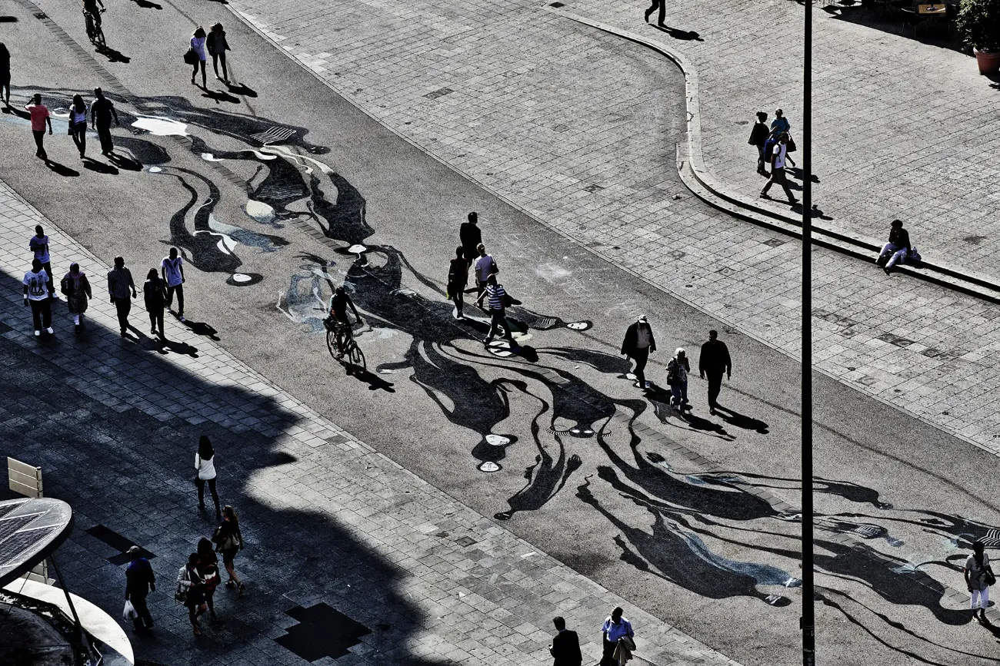
We're social by definition.
The city isolates us anyway.
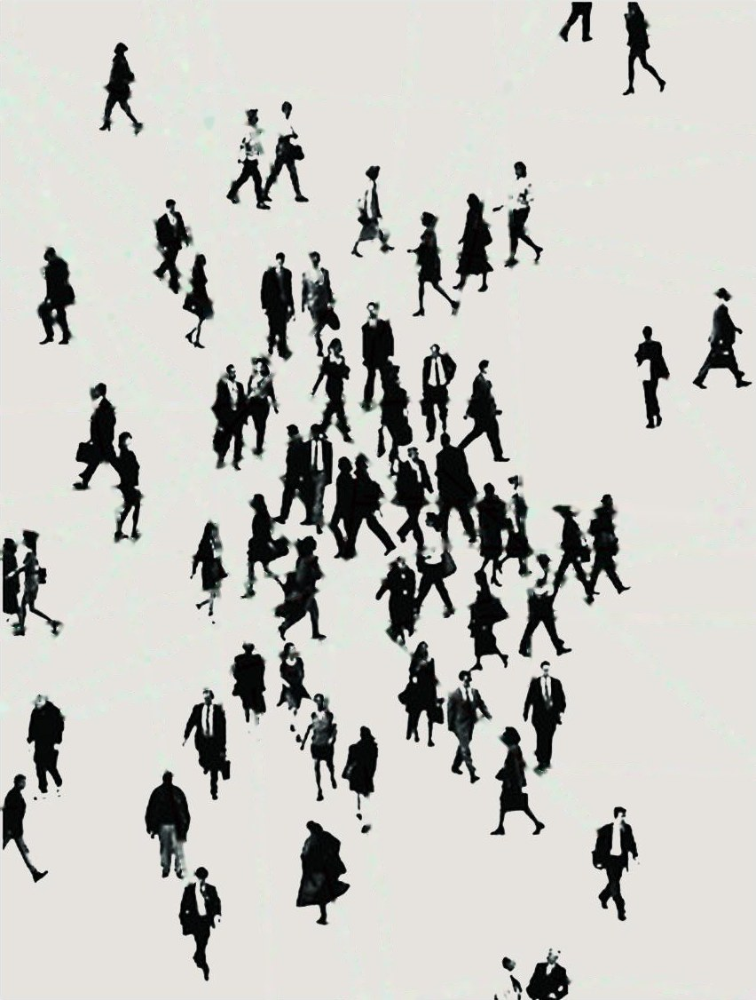
When the world gets too heavy, humans don't face it alone — we gather, and we make something to carry us through.
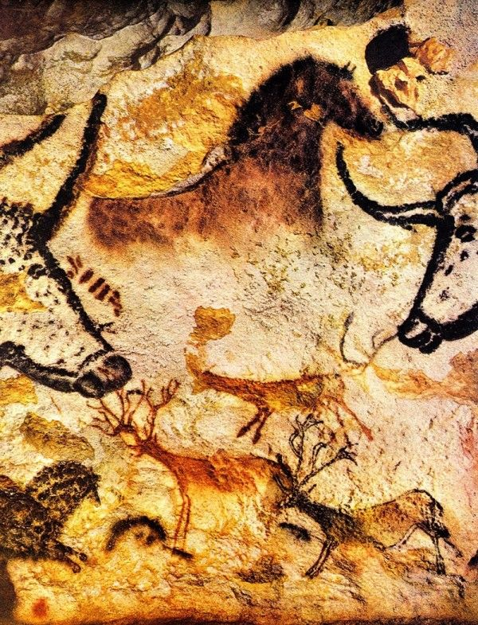
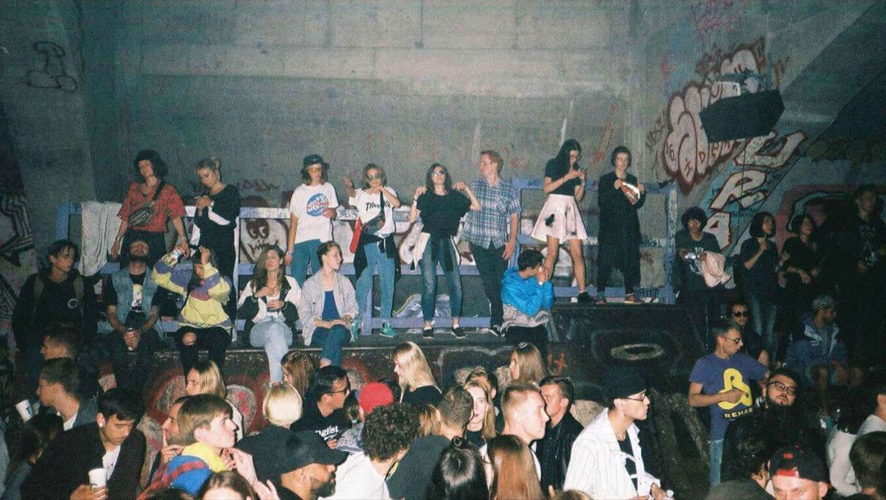
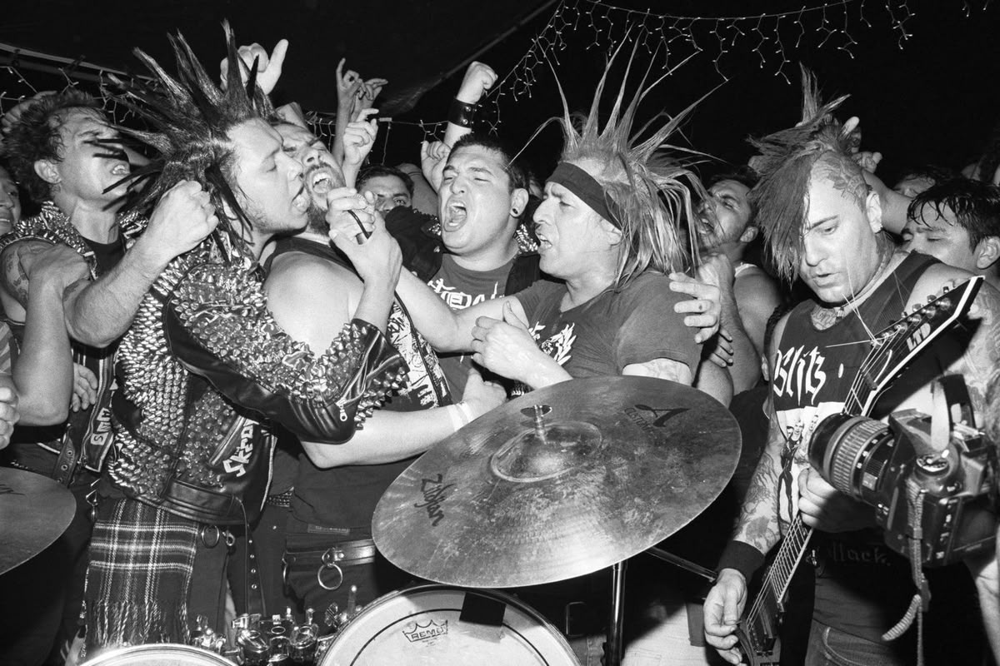
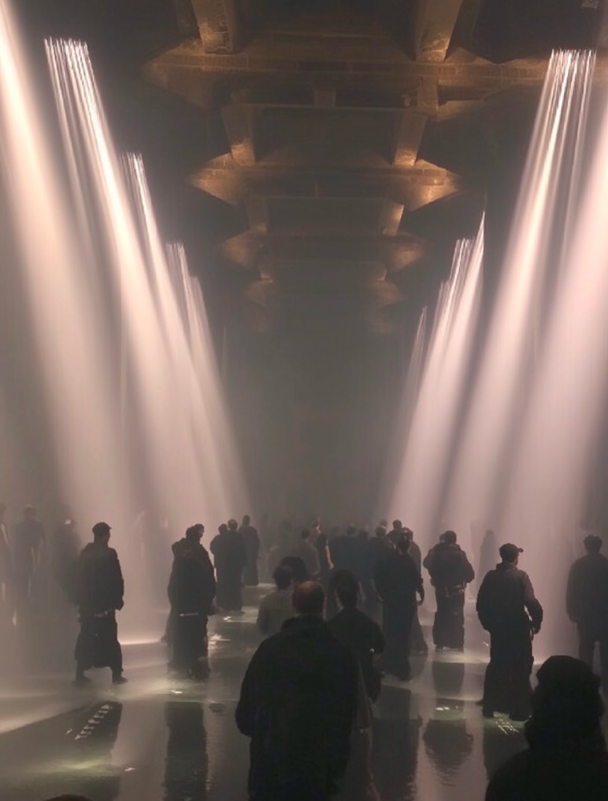
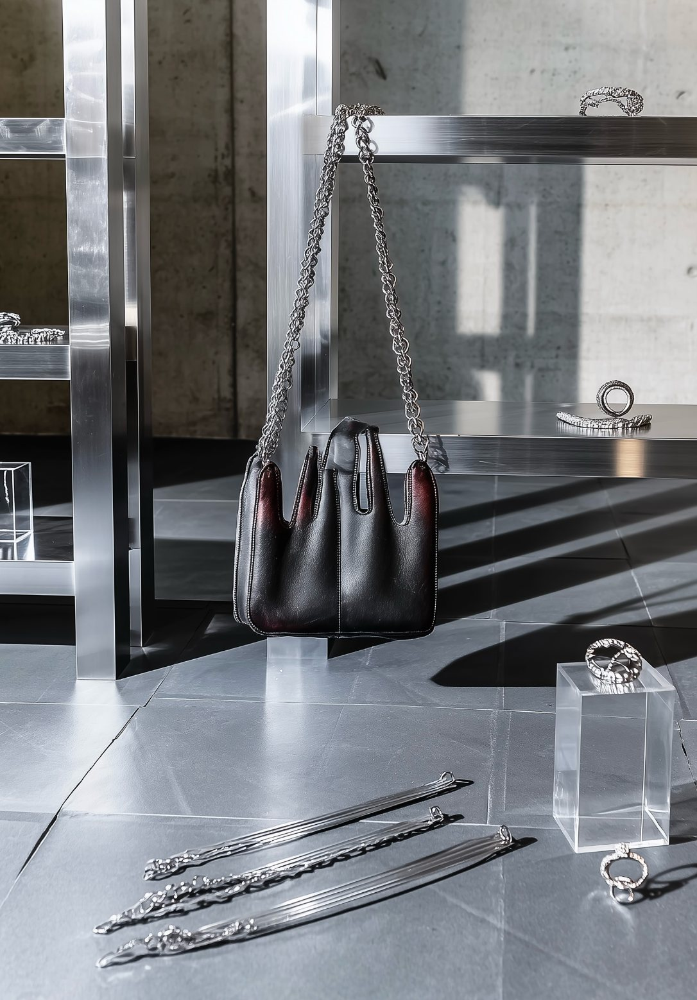
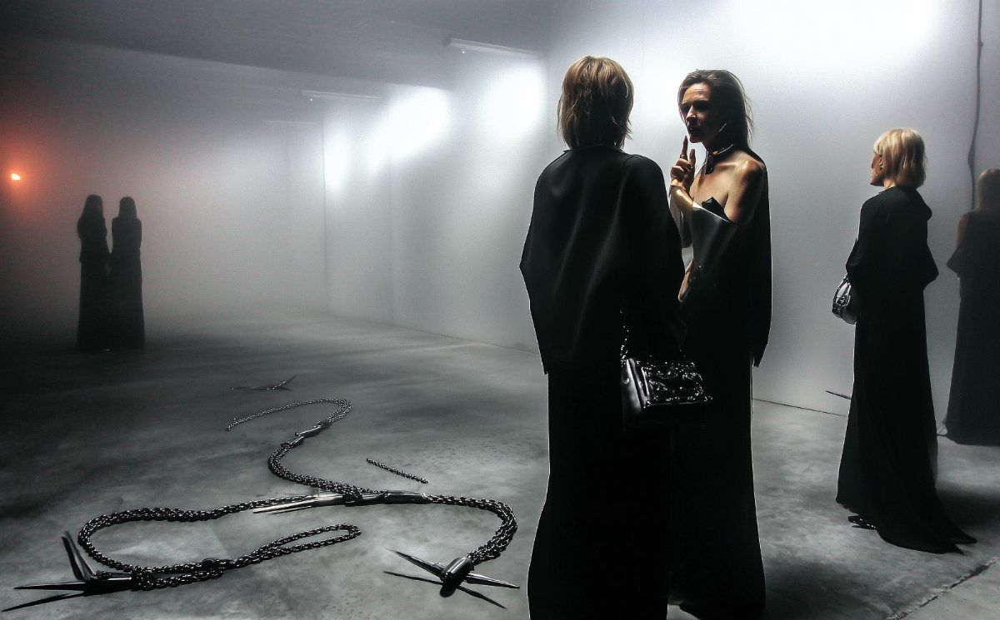
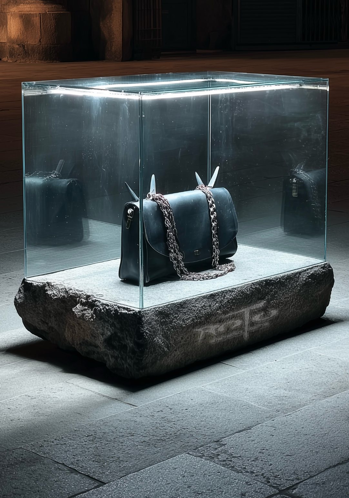
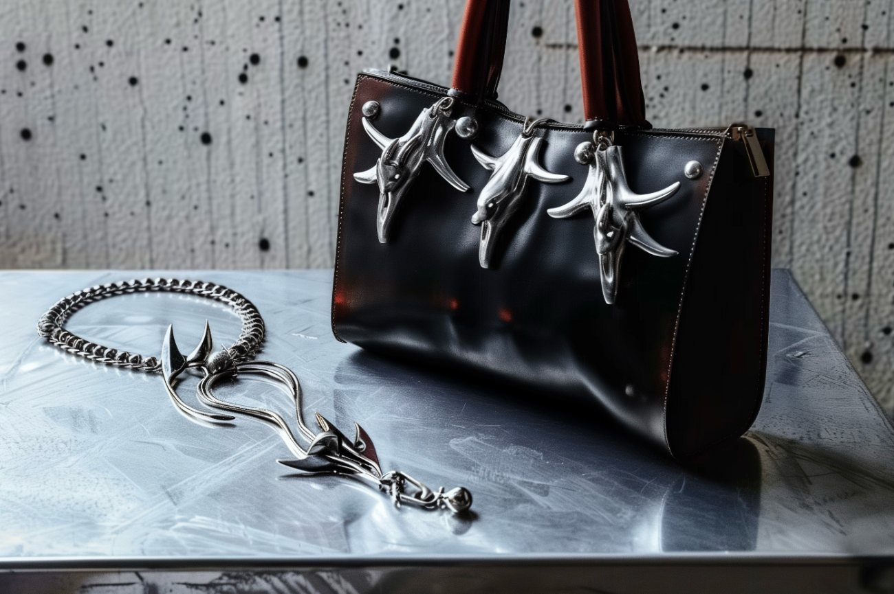
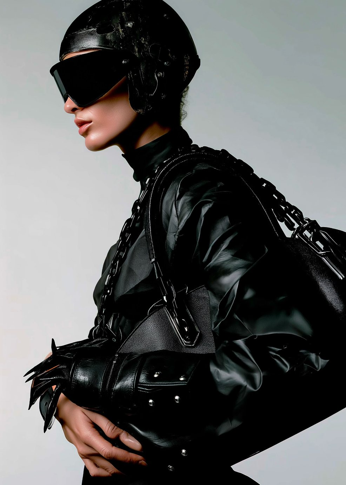
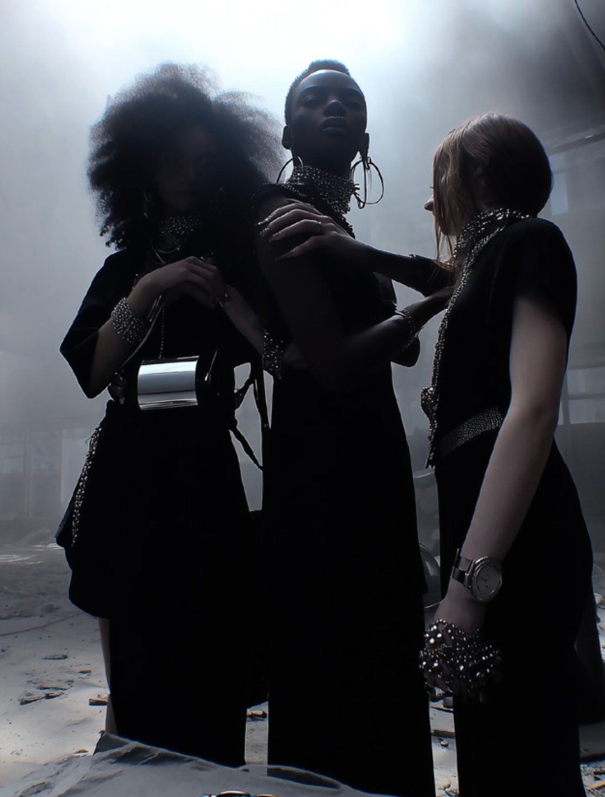
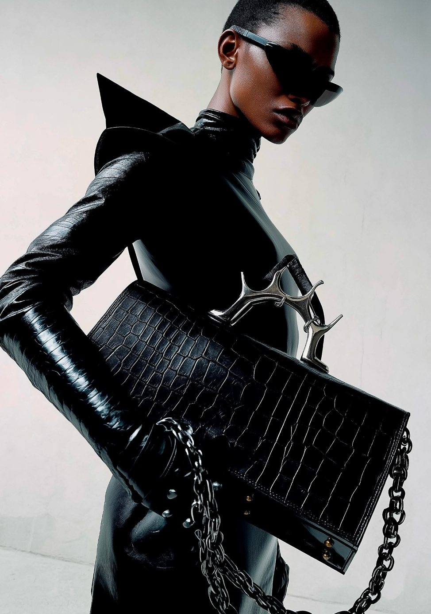
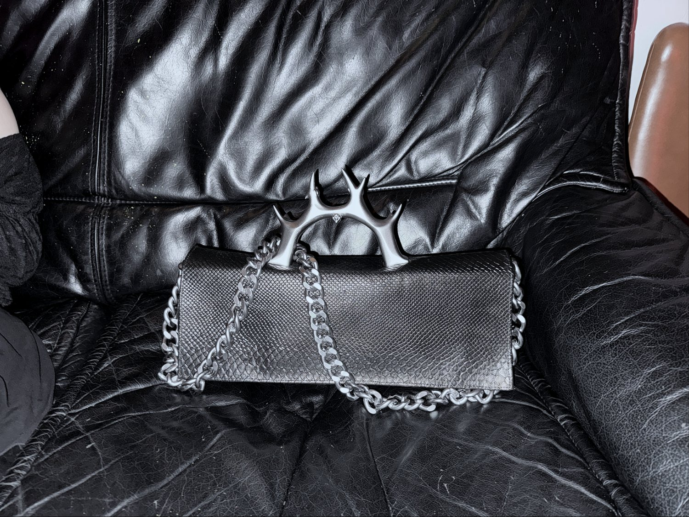